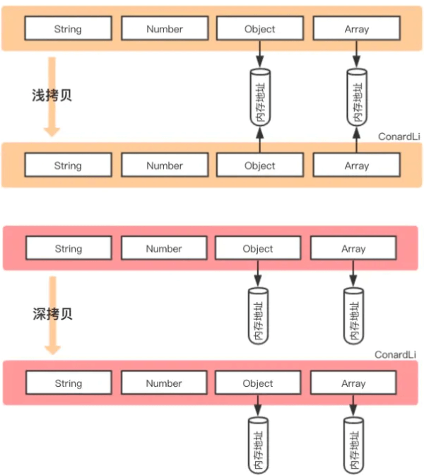

深拷贝浅拷贝有什么区别？怎么实现深拷贝？
参考答案
一、数据类型存储
前面文章我们讲到，JavaScript中存在两大数据类型：
- 基本类型
- 引用类型
基本类型数据保存在在栈内存中
引用类型数据保存在堆内存中，引用数据类型的变量是一个指向堆内存中实际对象的引用，存在栈中
二、浅拷贝
浅拷贝，指的是创建新的数据，这个数据有着原始数据属性值的一份精确拷贝
如果属性是基本类型，拷贝的就是基本类型的值。如果属性是引用类型，拷贝的就是内存地址
即浅拷贝是拷贝一层，深层次的引用类型则共享内存地址
下面简单实现一个浅拷贝
function shallowClone(obj) {
const newObj = {};
for(let prop in obj) {
if(obj.hasOwnProperty(prop)){
newObj[prop] = obj[prop];
}
}
return newObj;
}在JavaScript中，存在浅拷贝的现象有：
Object.assignArray.prototype.slice(),Array.prototype.concat()- 使用拓展运算符实现的复制
Object.assign
var obj = {
age: 18,
nature: ['smart', 'good'],
names: {
name1: 'fx',
name2: 'xka'
},
love: function () {
console.log('fx is a great girl')
}
}
var newObj = Object.assign({}, obj);slice()
const fxArr = ["One", "Two", "Three"]
const fxArrs = fxArr.slice(0)
fxArrs[1] = "love";
console.log(fxArr) // ["One", "Two", "Three"]
console.log(fxArrs) // ["One", "love", "Three"]concat()
const fxArr = ["One", "Two", "Three"]
const fxArrs = fxArr.concat()
fxArrs[1] = "love";
console.log(fxArr) // ["One", "Two", "Three"]
console.log(fxArrs) // ["One", "love", "Three"]拓展运算符
const fxArr = ["One", "Two", "Three"]
const fxArrs = [...fxArr]
fxArrs[1] = "love";
console.log(fxArr) // ["One", "Two", "Three"]
console.log(fxArrs) // ["One", "love", "Three"]三、深拷贝
深拷贝开辟一个新的栈，两个对象的属性完全相同，但是对应两个不同的地址，修改一个对象的属性，不会改变另一个对象的属性
常见的深拷贝方式有：
- _.cloneDeep()
- jQuery.extend()
- JSON.stringify()
- 手写循环递归
_.cloneDeep()
const _ = require('lodash');
const obj1 = {
a: 1,
b: { f: { g: 1 } },
c: [1, 2, 3]
};
const obj2 = _.cloneDeep(obj1);
console.log(obj1.b.f === obj2.b.f);// falsejQuery.extend()
const $ = require('jquery');
const obj1 = {
a: 1,
b: { f: { g: 1 } },
c: [1, 2, 3]
};
const obj2 = $.extend(true, {}, obj1);
console.log(obj1.b.f === obj2.b.f); // falseJSON.stringify()
const obj2=JSON.parse(JSON.stringify(obj1));但是这种方式存在弊端，会忽略undefined、symbol和函数
const obj = {
name: 'A',
name1: undefined,
name3: function() {},
name4: Symbol('A')
}
const obj2 = JSON.parse(JSON.stringify(obj));
console.log(obj2); // {name: "A"}循环递归
function deepClone(obj, hash = new WeakMap()) {
if (obj === null) return obj; // 如果是null或者undefined我就不进行拷贝操作
if (obj instanceof Date) return new Date(obj);
if (obj instanceof RegExp) return new RegExp(obj);
// 可能是对象或者普通的值 如果是函数的话是不需要深拷贝
if (typeof obj !== "object") return obj;
// 是对象的话就要进行深拷贝
if (hash.get(obj)) return hash.get(obj);
let cloneObj = new obj.constructor();
// 找到的是所属类原型上的constructor,而原型上的 constructor指向的是当前类本身
hash.set(obj, cloneObj);
for (let key in obj) {
if (obj.hasOwnProperty(key)) {
// 实现一个递归拷贝
cloneObj[key] = deepClone(obj[key], hash);
}
}
return cloneObj;
}四、区别
下面首先借助两张图，可以更加清晰看到浅拷贝与深拷贝的区别

从上图发现，浅拷贝和深拷贝都创建出一个新的对象，但在复制对象属性的时候，行为就不一样
浅拷贝只复制属性指向某个对象的指针，而不复制对象本身，新旧对象还是共享同一块内存，修改对象属性会影响原对象
// 浅拷贝
const obj1 = {
name : 'init',
arr : [1,[2,3],4],
};
const obj3=shallowClone(obj1) // 一个浅拷贝方法
obj3.name = "update";
obj3.arr[1] = [5,6,7] ; // 新旧对象还是共享同一块内存
console.log('obj1',obj1) // obj1 { name: 'init', arr: [ 1, [ 5, 6, 7 ], 4 ] }
console.log('obj3',obj3) // obj3 { name: 'update', arr: [ 1, [ 5, 6, 7 ], 4 ] }但深拷贝会另外创造一个一模一样的对象，新对象跟原对象不共享内存，修改新对象不会改到原对象
// 深拷贝
const obj1 = {
name : 'init',
arr : [1,[2,3],4],
};
const obj4=deepClone(obj1) // 一个深拷贝方法
obj4.name = "update";
obj4.arr[1] = [5,6,7] ; // 新对象跟原对象不共享内存
console.log('obj1',obj1) // obj1 { name: 'init', arr: [ 1, [ 2, 3 ], 4 ] }
console.log('obj4',obj4) // obj4 { name: 'update', arr: [ 1, [ 5, 6, 7 ], 4 ] }小结
前提为拷贝类型为引用类型的情况下：
- 浅拷贝是复制内存中的地址，拷贝前后的对象，因为引用类型共享了同一块内存，修改会相互影响。
- 深拷贝是递归拷贝深层次，属性为对象时，深拷贝是新开栈，两个对象指向不同的地址
JS数据类型分别基本数据类型和引用数据类型，基本数据类型保存的是值，引用类型保存的是引用地址(this指针)。
浅拷贝共用一个引用地址，深拷贝会创建新的内存地址。
浅拷贝方法
- 直接对象复制
- Object.assign
深拷贝
- JSON.stringify转为字符串再JSON.parse
- 深度递归遍历